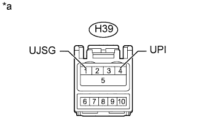

DTC CB-13 Обнаружение перегрузки по току в линии USB |
| Код DTC | Условие обнаружения DTC | Неисправный участок |
| CB-13 | Перегрузка по току USB-устройства или устройства "iPod" |
|
| 1.ЗАМЕНИТЕ USB-УСТРОЙСТВО ИЛИ "iPod" |
Отсоедините USB-устройство или iPod от переходника стереогнезда.
Выключите зажигание.
Поверните замок зажигания в положение ACC.
Подсоедините заведомо исправное USB-устройство или iPod к переходнику стереогнезда.
| ДАЛЕЕ | |
| 2.ПРОВЕРЬТЕ DTC |
Удалите коды DTC (Нажмите здесь).
Проверьте код DTC и убедитесь, что зарегистрированный DTC больше не выводится.
|
| ||||
| OK | ||
| ||
| 3.ПРОВЕРЬТЕ ЭБУ МУЛЬТИМЕДИЙНОГО ИНТЕРФЕЙСА |
|  |
Отсоедините разъем H39 переходника стереогнезда № 1.
Измерьте напряжение в соответствии со значениями, приведенными в таблице.
| Контакты для подключения диагностического прибора | Условие | Заданные условия |
| H39-1 (UJSG) - H39-4 (UPI) | Всегда | 5 В |
| *a | Вид спереди разъема со стороны жгута проводов: (к переходнику стереогнезда № 1 в сборе) |
|
| ||||
| OK | ||
| ||
| 4.ПРОВЕРЬТЕ ЖГУТ ПРОВОДОВ И РАЗЪЕМ (ЭБУ МУЛЬТИМЕДИЙНОГО ИНТЕРФЕЙСА - ПЕРЕХОДНИК СТЕРЕОГНЕЗДА) |
Отсоедините разъем H40 ЭБУ мультимедийного интерфейса.
Отсоедините разъем H39 переходника стереогнезда № 1.
Измерьте сопротивление в соответствии со значениями, приведенными в таблице ниже.
| Контакты для подключения диагностического прибора | Условие | Заданные условия |
| H40-4 (UPO) - H39-4 (UPI) | Всегда | Менее 1 Ом |
| H40-1 (UESG) - H39-1 (UJSG) | Всегда | Менее 1 Ом |
| H40-4 (UPO) - масса | Всегда | 10 кОм или более |
| H40-1 (UESG) - масса | Всегда | 10 кОм или более |
|
| ||||
| OK | ||
| ||